Module 01
AI in projects: levers and critical issues
1.1 Module quick reference
- AI value levers: automation and productivity, human-AI collaboration, personalization, innovation, process simplification.
- Critical issues to be monitored: AI as an end in itself, data quality, risk of error, responsibility, integration with existing systems.
- Integration scenarios: AI as an add-on, AI as a core product driver, AI as an internal enabler.
- Prioritization: Always evaluate user impact, business value and technical feasibility with explicit criteria.
- Execution: Choose cautious or rapid approach based on risk, regulatory compliance and cost of failure.
- Educational objective: design an effective distribution of work between AI and people, with clear responsibilities.
1.2 Define the AI value space
In an AI project the initial question is not "what model do we use?", but "what problem do we solve and how do we measure the improvement". Real value emerges when a solution increases performance, reduces operational costs or visibly improves the user experience. Discovering and defining problems worth solving with AI is a complex task that requires balancing long-term strategic goals and quick wins.
To correctly set up the discovery of opportunities, the process is divided into three fundamental steps:
- Identify opportunities: Identify areas where AI can add value starting from user feedback and technological advancements.
- Prioritize opportunities: evaluate technical feasibility, impact and alignment with business objectives.
- Shape opportunities: Shape opportunities by exploring solution approaches and refining concepts into concrete features.
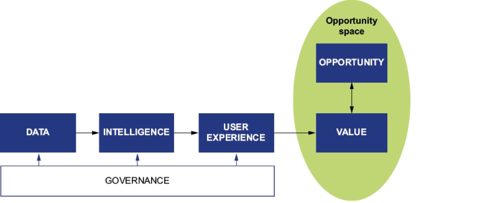
1.3 Operational example: music streaming service
A useful example is designing a music streaming app geared towards growing listening and reducing churn. The opportunity tree helps to start from the business objective and break it down into concrete opportunities on which to intervene with AI.
In the streaming case, the "engagement" branch can include personalized recommendations, dynamic playlists and contextual suggestions based on the time of day. The "loyalty" branch can instead include early detection of churn signals, proactive campaigns and optimization of the music onboarding experience.
The practical usefulness of the tree is that it makes the connection between outcome metrics and product choices explicit: each opportunity can be evaluated on user impact, business value and technical feasibility before moving on to development.
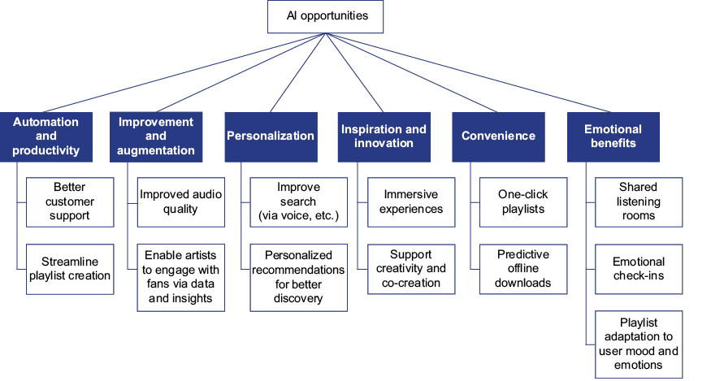
1.4 Value levers: how AI impacts processes
Effective planning starts from understanding the expected benefits. The six main types of benefits include:
1. Automation and productivity: AI excels at handling repetitive tasks that require many small decisions (e.g. customer service, fraud detection). Value is tangible when the cost of the AI process (development + execution + error handling) is significantly lower than the cost of the manual process.
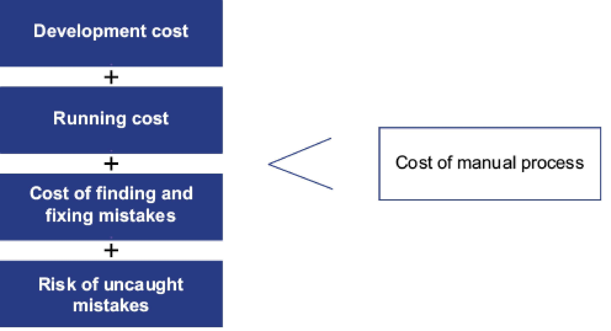
2. Improvement and support: rather than replacing humans, AI collaborates by bringing its strengths (large-scale data processing, precision in defined domains) to support human capabilities (understanding of context, creativity, emotional intelligence).
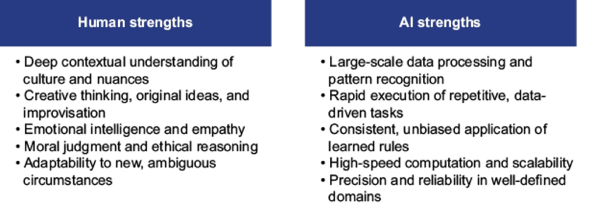
3. Personalization: tailor products and services to individual preferences using user behavior data. Good personalization requires a solid foundation of data and continuous refinement so as not to alienate the user with irrelevant or invasive suggestions.
4. Inspiration and innovation: AI can transform innovation processes by accelerating the idea-action cycle and analyzing complex patterns in large volumes of data (e.g. discovery of new materials or drugs).
5. Convenience: Reduce friction in user journeys by eliminating tedious steps, such as with intelligent voice searches or automatic scheduling systems.
6. Emotional benefits: Create interactions that resonate on a personal level, like voice assistants that understand tone or recommendation engines that pick up on subtle emotional nuances.
1.5 When not to use AI: Two rules of thumb
Not all decisions are good candidates for automation:
- Rare or one-off decisions: The cost of designing and maintaining may outweigh the benefit.
- Mandatory full explainability: in processes that require linear and fully traceable reasons (e.g. high-impact legal or credit procedures), rules-based or hybrid approaches may be more suitable.
1.6 Critical issues and integration scenarios
There are three main scenarios for integrating AI into a business:
- AI as an add-on: updating an existing product (e.g. adding sustainable reporting functionality to an existing tool). It requires great attention to managing fragmented data and user experience.
- AI as the central value driver: AI is the primary driver of the value proposition ("greenfield" scenarios). It requires investment in high-quality data collection from the start.
- AI as an internal enabler: optimization of operational processes "behind the scenes" (e.g. more precise customer segmentation for marketing). Requires clear efficiency metrics.
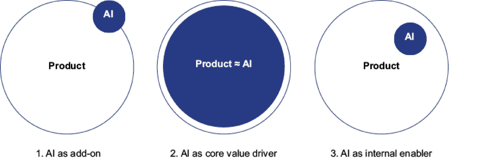
1.7 Case study: Miro
Miro represents a useful case of AI integration in a product already adopted on a large scale for visual collaboration. AI does not replace the main workflow, but accelerates high-volume cognitive activities: content synthesis, reorganization of ideas, generation of first drafts and support for decision convergence in workshops.
From a design perspective, value comes from inserting AI where the team wastes the most time: moving from lots of messy inputs to a shared, actionable structure. In this scheme, the human component remains decisive for priorities, quality of decisions and final validation.
This case study illustrates a general principle well: AI generates ROI when it reduces the time between exploration and operational alignment without compromising control, transparency and quality of the output.
Reference link: Miro
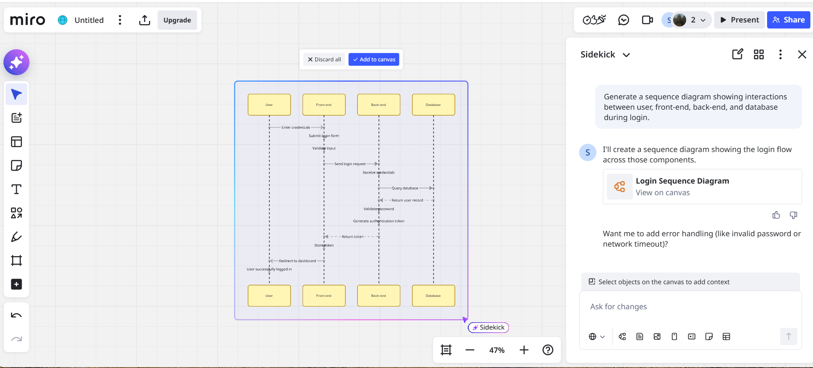
1.8 Three ways of integrating into products
- AI as an add-on on existing product.
- AI as the central engine of a natively AI product.
- AI as an internal enabler to optimize operational processes.
In the add-on model the advantage is speed to market thanks to an already existing user base and processes; the challenge is to integrate without degrading user experience and trust. In the native AI model the priority is to build model and data quality quickly. In the internal model the focus is operational ROI: efficiency, data security, team adoption and continuity of use.
1.9 AI Opportunity Sources: Building a Continuous Flow
To have a solid flow of ideas, it's not enough to wait for requests from customers. We need a continuous discovery system that combines internal and external signals.
1.9.1 Inside knowledge and expert intuition
Product, design, sales and operations teams have working knowledge of the domain. This experience allows you to generate hypotheses at high speed, as long as they are validated early with real tests.
1.9.2 Internal use and testing
Using AI capabilities internally speeds up learning cycles because feedback comes right away. It's an excellent initial phase, but it shouldn't last too long: after the first MVP it is necessary to validate with external users to avoid distortions.
1.9.3 Listening to customers and behavioral data
Interviews, tickets, reviews and analyzes must be read together. User statements are useful, but the observed behavior produced is a reality check that avoids decisions based on partial perceptions.
1.9.4 External market signals
The most defensible opportunities often emerge from four signals:
- New technological advances: open up previously unfeasible possibilities.
- Competitors' moves: help understand what the market is already willing to adopt.
- Regulations: create new mandatory processes and therefore new automation needs.
- Strategic positioning: in some cases AI strengthens innovative positioning, but it must always remain connected to real value for the customer.
1.9.5 Concrete opportunity: modernization of legacy systems (COBOL)
One high-value area is modernizing legacy applications in COBOL with AI support: the value is not just technical, but economic and strategic. In many contexts, migration reduces recurring licensing costs and dependencies on proprietary stacks, with less technological lock-in and greater evolutionary flexibility.
Market reference: IBM stock suffers worst single-day drop in 25 years over Anthropic's COBOL tool.
1.10 Horizontal vs Vertical Opportunities
Distinguishing this point early avoids strategic errors:
- Horizontal: they solve needs that cut across many sectors (e.g. assisted writing, support for knowledge work).
- Verticals: solve sector-specific problems (e.g. finance, healthcare, insurance), requiring more domain expertise and often targeted model tuning.
Operationally, horizontal cases require strong ability to scale the product across heterogeneous markets; vertical cases require greater depth on legislation, processes and specialized language.
1.10.1 Recommended reference: McKinsey 2023
McKinsey highlighted the topic in 2023 in the report "The Economic Potential of Generative AI: The Next Productivity Frontier" (link).
Operational summary on horizontal/vertical:
- Horizontal: a very large share of GenAI value is concentrated in cross-functional functions found in almost all companies, particularly customer operations, marketing and sales, software engineering, research and development.
- Vertical: some sectors show higher relative potential compared to revenues (including banking, high technology, life sciences), because they combine information intensity, knowledge-intensive processes and high-leverage use cases.
- Design implication: if you're looking for rapid adoption and scale, start with horizontal use cases; if you're looking for defensible differentiation, invest in vertical use cases with strong domain integration and first-party data.
1.11 Capabilities of Generative AI and GPTs: Use Cases, Pain Points, and Risks
GenAI is not a single capability but a family of capabilities covering text, images, video, code, audio and cognitive automation. To design well you need to separate three levels: what it can do, where it is best to use it, what risks it entails.
1.11.1 Core operational capabilities
- Text generation: content writing, conversational assistance, translation, synthesis.
- Visual and multimedia generation: creation of realistic/stylized images, video editing, effects and 3D modeling support.
- Software development support: snippet generation, assisted refactoring, technical documentation, help in testing.
- Additional creative outputs: support for musical composition, scripts and style variations.
- Context adaptability: pre-trained models that can be specialized on specific tasks through instructions, context and targeted adaptation (fine-tuning).
1.11.2 Use cases to monitor in the company
| Area | Concrete use cases | Expected value |
|---|---|---|
| Content and marketing | product descriptions, social posts, campaigns, taglines, copy variants | faster production speed, shorter time to market |
| Journalism and knowledge work | report summary, article drafts, preliminary factual verification support | acceleration of editorial and analytical activities |
| Customer Service | chatbots, automatic replies, contextual recommendations | reduction of response times and better service coverage |
| Education and training | personalized plans, quizzes, multi-format explanations, conversational language practice | more personalized and scalable learning |
| Creative Industries | creative sketches, storyboards, video effects, music, game design support and NPC dialogues | expanding creative capacity and rapid prototyping |
| Software Engineering | code generation, comments/documentation, test cases and synthetic data | increased team productivity and quality of release cycles |
| Healthcare | image analysis support, help with drug discovery, personalization of treatments | improved clinical decision support and operational priorities |
| Finance | automatic reporting, market data synthesis, fraud detection support | more speed on risk analysis and control |
| Scientific research | literature summary, initial hypotheses, experimental design support | reduction of exploration and knowledge review time |
1.11.3 Technical and qualitative weaknesses
- Plausible factual errors: the model can formulate fluent but incorrect answers, especially on specialized domains.
- Bias in training data: biased or discriminatory outputs if fairness checks are not applied.
- Weakness on deep reasoning: good statistical ability, but limited semantic understanding and causal judgment.
- Reduced stability on long texts: possible inconsistencies on extended outputs, with loss of logical structure.
- Risk of content homologation: excessive use can produce generic and undistinctive texts.
- Authenticity problem: distinguishing human and synthetic content is increasingly difficult, with impacts on trust and traceability.
- Data quality dependency: Without quality data and prompts, performance degrades rapidly.
1.11.4 Key risks to include in the governance framework
| Risk category | Operational description | Potential impact | Mitigation Strategy |
|---|---|---|---|
| Quality and reliability | hallucinations, incompleteness, context errors | incorrect decisions, operational costs, customer damage | human-in-the-loop supervision on critical outputs, mandatory factual verification, testing and validation on real datasets |
| Security and abuse | generative phishing, social engineering, deepfake, malicious code support | fraud, cyber incidents, reputational damage | security controls on prompts and output, anti-abuse policies, continuous monitoring and incident response |
| Ethics and legal | intellectual property, attribution, misinformation, opacity towards users | disputes, policy violations, loss of credibility | internal ethical guidelines, legal review of sensitive cases, transparency on the use of AI towards users and stakeholders |
| Compliance and regulation | failure to comply with obligations on transparency, data use, AI governance | sanctions, project blocks, increased legal risk | formalized governance policies, responsibility for roles and decisions, continuous updating with respect to regulations and standards |
| Trust and brand | offensive, misleading, or manipulative output in public touchpoints | loss of customer trust and commercial impact | editorial quality controls, human supervision in public content, transparent communication when the content is assisted by AI |
| Organization and work | partial replacement of activities, skills misalignment, disorderly adoption | internal resistance, inefficiency, decline in decision-making quality | training plan, progressive adoption for well-defined use cases, explicit responsibility on review and final responsibility |
1.11.5 Key strategies for using generative AI and GPTs
| Key Strategy | Operational objective | Practical actions |
|---|---|---|
| Starting from well-defined use cases | avoid "AI for AI's sake" initiatives and focus on measurable value | start from concrete problems, start with small projects, evaluate ROI and total cost of adoption |
| Focus on human-AI collaboration | use AI as an amplifier of human work, not as an integral replacement | maintain continuous human supervision, train teams, preserve human decision-making responsibility |
| Prioritize quality control and bias mitigation | reduce errors, hallucinations and distorted output | testing and validation on real datasets, structured factual verification, periodic bias checks on prompts and outputs |
| Strengthen transparency and accountability | increase internal/external trust and clarity of responsibilities | declare when AI is used, define process managers, adopt development, release and monitoring policies |
| Investing in experimentation and continuous learning | adapt to the rapid evolution of models, techniques and regulation | continuous testing and learning cycles, skills updating, proactive regulatory monitoring |
| Strengthen databases and security | maintain output quality and reduce operational/cyber risk | take care of data quality and datasets for fine-tuning, protect access and models, control use and abuse of integrations |
1.12 Negative example: AI as an end in itself (Sanremo 2026 case)
A useful example of what not to do is the case reported by Fanpage on 25 February 2026 regarding the direction of Sanremo: a visual effect generated with AI, inserted during the live broadcast, was perceived as poor and out of context compared to the expected level of the event. Go directly to the article with video: Fanpage - The direction of Sanremo used AI for the first time, but it was a nightmare.
The example shows the classic "AI for the sake of AI" anti-pattern: using AI just to demonstrate that you are using it, without any real improvement in the experience.
Mistakes to avoid:
- insert an AI functionality without measurable user objective;
- not defining a minimum quality threshold before broadcasting;
- use "novelty" effects that are not consistent with the operational and reputational context;
- do not provide an immediate fallback mechanism towards traditional management.
Operational lesson:
- before introducing AI into a public touchpoint, clarify which problem it solves;
- validate quality in real conditions;
- assign explicit responsibilities on final approval and incident management.
1.12.1 Should I use Generative AI or GPTs for critical business operations?
| Key Point | Operational implication |
|---|---|
| Don't leave critical decisions solely to GPT/GenAI | use models as a support, not as a final decision maker |
| lack of causal understanding and limitations in contextual judgment | require human expert review in high impact passages |
| possible biases in training data | apply fairness checks and verifications on sensitive groups |
| plausible factual errors in specialized domains | introduce structured factual verification and validation on authoritative sources |
| unclear responsibility if the decision is entrusted only to AI | assign explicit responsibility for decision, approval and escalation |
| analysis of large volumes of data and pattern identification | use AI output for pre-analysis and support for decision-making hypotheses |
| generation of alternative scenarios | support decision-making workshops and comparison of alternatives |
| summary of complex reports | accelerate managerial understanding without skipping the test |
| human-AI collaboration with human supervision in the loop | combine AI speed with critical thinking, ethical judgment and human responsibility |
1.12.2 Identify and manage failure risks in AI strategy implementation
| Common AI Strategy Failures | Mitigation Tactics |
|---|---|
| Misaligned Goals: AI projects without clear business goals or disconnected from real problems | starting from an explicit purpose, connecting each initiative to the company's mission and priorities |
| Insufficient quality of data sources: incomplete, distorted or unreliable data | strengthen data governance with quality controls, robust data management and bias mitigation throughout the lifecycle |
| Skills Shortage: Teams Without Adequate Data, Domain, and Responsible AI Skills | building the right team with targeted hiring, training and external partnerships |
| Underestimation of complexity: times, costs and technical difficulties estimated too optimistically | set realistic expectations on development, budget and performance, encouraging experimentation and learning |
| Late ethical control: fairness, privacy and responsibility treated only downstream | integrate ethics and risk controls right from design |
| Resistance to change: poor involvement of stakeholders and operational teams | Transparently communicate the benefits and limitations of AI to build trust and adoption |
| Siloed development: functions working in isolation without cross-functional coordination | enable collaboration between data science, IT, business, risk/compliance and ethics experts |
| Failure to pivot: persistence on ineffective plans despite contrary feedback | take an adaptive approach with periodic reviews, course correction and data-driven iterations |
| Weak executive sponsorship: insufficient top management support | gain leadership commitment to resources, priorities and removal of organizational obstacles |
1.12.3 Define responsibility for AI systems
Accountability in AI systems requires explicit responsibilities over design, release, use and impact management. In real-world contexts, the model crosses multiple teams and phases: without a clear chain of responsibility, each incident produces delays, conflicts and untraceable decisions.
| Level of responsibility | Primary responsibility |
|---|---|
| Developers and data scientists | technical architecture, data selection, training, initial evaluation, fairness and robustness protection |
| Release and Operations Team | commissioning, production monitoring, management of unexpected effects and alignment with intended use |
| Organization (legal entity) | overall governance, definition of acceptable risk, remediation and compliance mechanisms |
| Control functions/regulators | definition of rules, verification of compliance, application of rules and requests for adaptations |
Operational mechanisms to activate:
- transparency and explainability: making the basis and limits of AI decisions understandable;
- audit and documentation traceability: track data, model versions, decisions and approvals;
- challenge and review processes: allow structured challenge of high-impact outcomes;
- independent supervision: periodic audits on critical systems with checks and gaps;
- Legal governance and compliance: Update policies and controls based on regulatory developments.
1.12.4 Rule of use in critical processes
In high-impact processes, GenAI should be used as a co-pilot and not as a sole decision maker. The activities in which it is very useful are:
- preliminary analysis of large volumes of information;
- generation of alternative scenarios;
- summary to facilitate managerial decisions.
The final decision must remain human, with explicit responsibility for factual verification, ethical evaluation, management of biases and traceability of liability.
1.13 Prioritization: Decide well with explicit criteria
To avoid falling into the trap of infinite analysis ("analysis paralysis"), it is essential to use stable and shared criteria against which to compare opportunities.
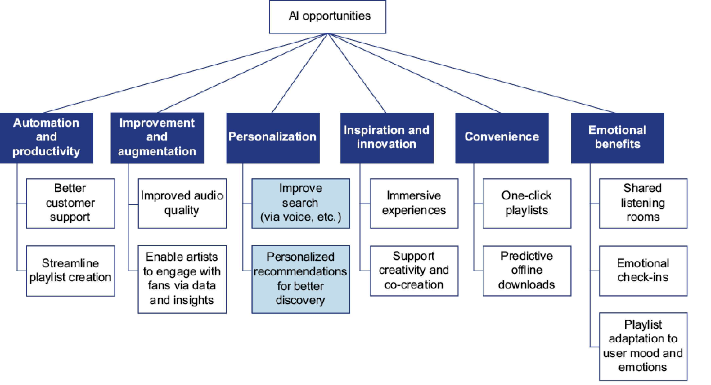
The three basic axes remain:
- User impact: how much value does it create for the end customer?
- Business value: how does it contribute to business objectives (e.g. reduction of churn, new revenues)?
- Technical feasibility: do we have the data, models and skills to make it happen?
In the streaming case, a recommendation engine can have a high impact because it improves discovery and loyalty; feasibility increases if historical data on listens, skips, likes and playlists already exist. In contrast, features like advanced voice search can have value but require higher cost and complexity upfront.
Alongside the three general axes it is useful to add context-specific criteria:
- Regulatory ease in sectors with high regulatory compliance.
- Data Readiness when data quality or availability is the primary bottleneck.
- Scalability and customization when the solution is deployed across heterogeneous corporate customers.
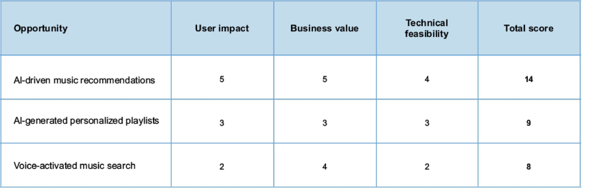
The scores help to make the reasoning explicit, but must not replace the product judgment. The best prioritization is the one that makes risks, assumptions and conditions for changing course clear.
1.14 Balancing quick results and long-term investments
A robust evolutionary plan combines:
- Quick Results: Quick Release, Quick Learning, Immediate Impact.
- Defensible investments: longer initiatives that build competitive advantage over time.
Focusing only on quick results brings quick but easily imitable results. Focusing only on the long term slows learning and increases the risk of unproven investments. The balance depends on the role of AI in the business strategy.
1.15 Execution Strategies: Cautious vs Rapid
The choice of approach depends on risk, cost of failure and regulatory context.
- Cautious Approach (Ready, Aim, Fire): In-depth research, strong validation of impact, feasibility and compliance before development. It is suitable when errors and non-conformities have a very high cost.
- Rapid Approach (Ready, Fire, Aim): fast prototyping, testing with real users, frequent iterations. It is suitable when the initial cost is low, the market is fast and real feedback is the main uncertainty reducer.
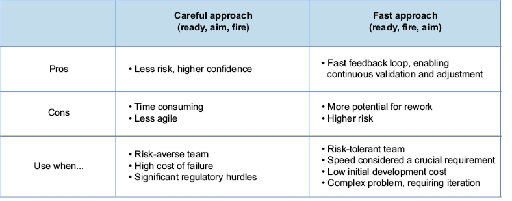
In the cautious flow, the team documents impact, feasibility, and constraints in advance to reduce the risk of irreversible decisions in critical contexts.
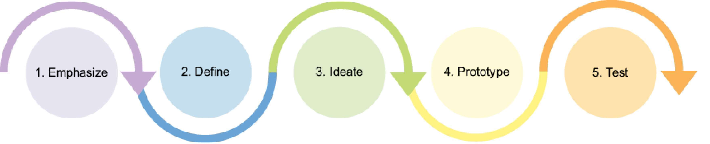
In rapid flow, the team soon builds a complete working solution to validate hypotheses with real data. This approach works well when the solution requires multiple tuning cycles and user behavior is not predictable from theoretical analysis alone.
1.16 Main end-of-section points
- build a continuous flow of opportunities from multiple sources, not just one;
- consciously choose between horizontal and vertical opportunities;
- evaluate with stable, transparent and consistent criteria over time;
- balance rapid results and long-term competitive advantage;
- adopt a cautious or rapid approach based on risk, regulatory compliance, cost of failure and team culture.
1.17 Map the AI solution space
In order not to get lost in the vastness of models and tools released daily, it is necessary to build a structured map that guides the discovery of the solution. The solution space is divided into three fundamental components: data, intelligence and user experience (UX), all surrounded by a layer of governance.
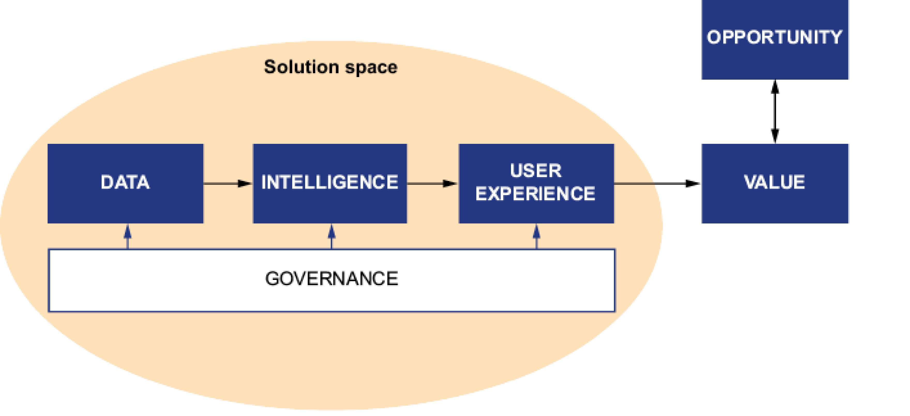
A systematic categorization helps to communicate with technical and non-technical stakeholders, to evaluate the necessary skills and to understand how choices in one area (e.g. data) influence others (e.g. intelligence or interface).
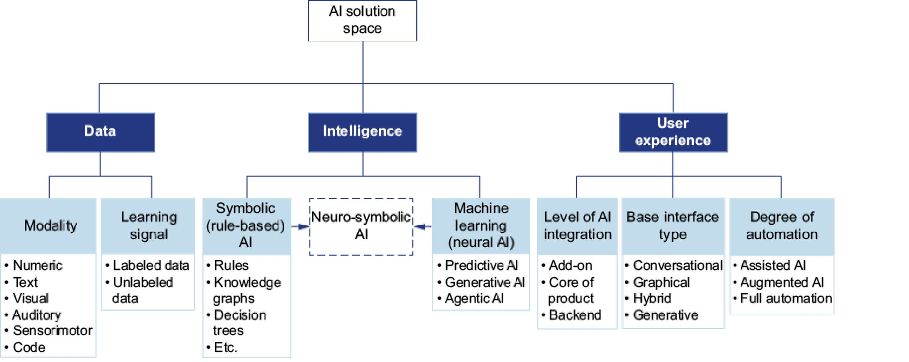
Note: What does "Neuro-symbolic AI" mean
Neuro-symbolic AI is a hybrid approach that combines:
- Neural AI: statistical models (e.g. deep learning) very effective in learning from data;
- Symbolic AI: rules and explicit logic (if-then, ontologies, constraints), useful for structured reasoning and traceability.
In practice, the neural part proposes or predicts, while the symbolic part controls, constrains or explains according to domain rules. It is useful when model performance, operational control, explainability and compliance are needed together.
1. Data: The fuel of the system
Data is no longer just an engineering issue, but directly impacts the user experience. They must reflect real needs and not just the training procedure.
1.1.1 The data mode
Modes represent the different types of data that models learn from:
- Textual: focused on natural language processing and generation (NLP). It includes tasks such as sentiment analysis, translation and synthesis.
- Visual: management of images and videos using computer vision to extract features and recognize objects.
- Auditive: speech recognition, voice biometrics and intonation-based emotion analysis.
- Sensorimotoria: data collected from the physical world via sensors, fundamental for robotics, drones and home automation.
- Computer code: a highly formalized language that enables development automation and increases programmer productivity.
Regardless of the source, AI always transforms raw data into a numerical mode (vectors) in order to process it mathematically.
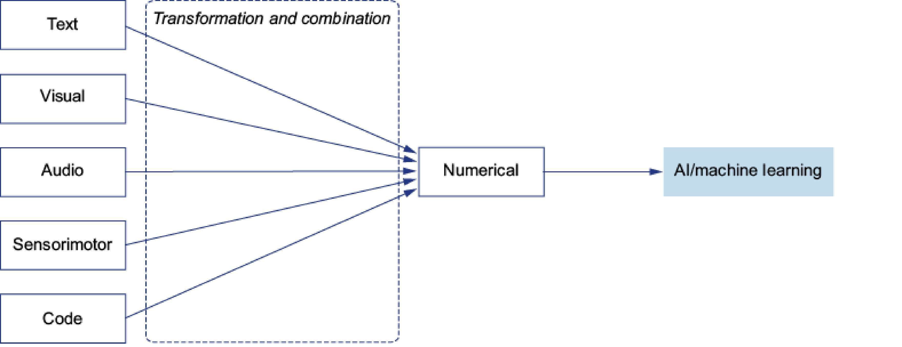
This transformation (preprocessing) is a strategic act: a representation that is too coarse, such as one-hot encoding, can cause crucial information about the importance and context of words to be lost.
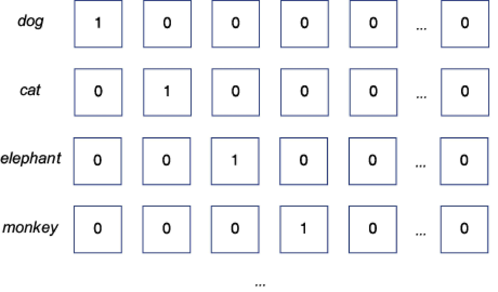
The current frontier is Multimodal AI, which combines multiple senses (e.g. sight and hearing) to build a richer and more accurate context, just like the human brain does in the learning process.
1.1.2 Labeled vs Unlabeled data
- Unlabeled data: without explicit learning signals (used for clustering). Because the results are uncertain, they are rarely used alone in end-user applications.
- Labeled data: each point is associated with a "label" that indicates the desired objective (e.g. "positive" review, "cat" image). They provide a clear and precise learning signal (supervised learning).
A special case are Large Language Models (LLM): although they use huge volumes of data, they use a self-labeling trick where the "next word" acts as a label for the sequence preceding it, allowing training on a planetary scale.
2. Types of intelligence: from symbols to agents
The intelligence paradigm chosen depends on the nature and complexity of the problem to be solved.
2.1.1 Rule-based AI (symbolic)
It is based on human-made logic, databases and ontologies. It is ideal when the domain is normative, stable and transparent (e.g. legal controls in banking).
- Advantages: Quick start for an MVP, total explainability of outputs, crucial help in collecting structured data for future iterations.
- Disadvantages: limited coverage; reality has too many nuances and borderline cases to be entirely contained in rigid rules.
2.1.2 Machine learning (neural AI)
Here it is the machine that learns from the data. It is divided into three main paradigms:
- Predictive AI (Analytics): focuses on well-defined tasks such as future predictions, trends and anomaly detection. It helps digest large volumes of data to extract actionable insights, but still requires human intervention to translate the analysis into action.
- Generative AI: creates new information (text, images, code, music) that resembles training patterns. It serves as a creative discussion partner and accelerates routine tasks.
- Agentic AI: Bridges the gap between guidance and action. It does not just suggest, but carries out activities autonomously via integrated tools (software plugins or physical devices), based on chains of reasoning generated by linguistic models.
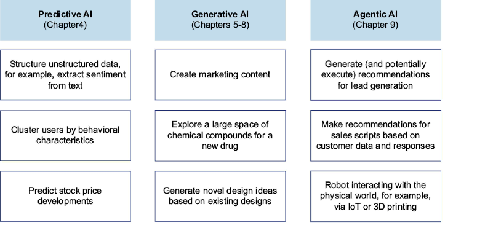
A typical example of Predictive AI is the transformation of unstructured feedback into structured numerical data (sentiment scores) to support strategic decisions on the product.
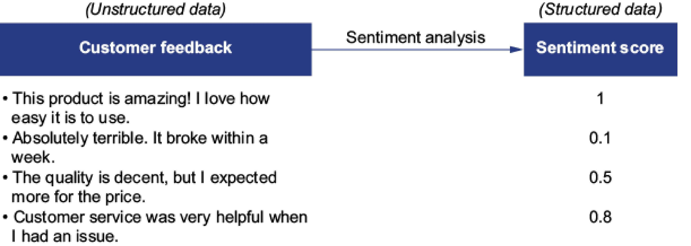
3. User Experience: The Value Interface
The interface (UI) ensures that the value created by AI is actually delivered to the user in a usable and understandable way.
3.1.1 Types of AI interfaces
- Conversational: offer maximum flexibility through natural language, but suffer from the "articulation barrier" (users don't always know what to ask) and the risk of hallucinations.
- Graphics: provide structure, predictability and trust, which are critical especially in B2B and analytics contexts.
- Hybrid: balance flexibility and control, integrating conversation for open inputs and graphical components (buttons, menus) for fixed and well-defined actions (e.g. diagnosis, release).
- Generative: represent the future, where the interface dynamically adapts to the user's mental model, customizing design and interactions at every step.
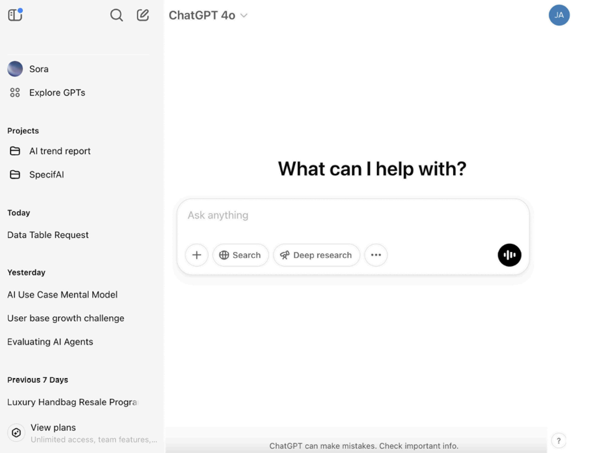
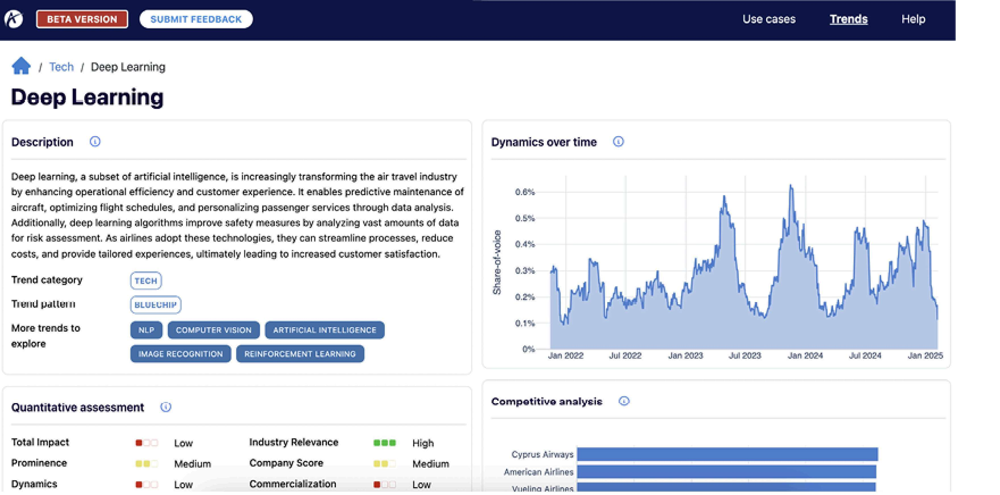
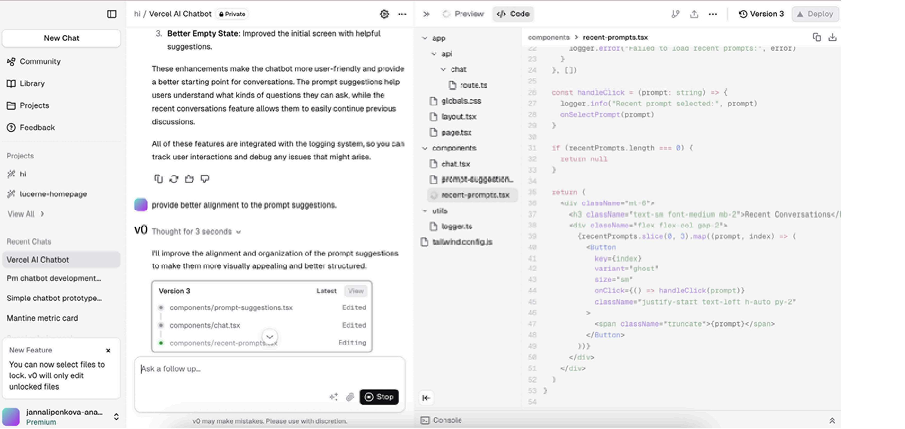
3.1.2 Practical criteria for hybrid and generative interfaces
When an AI system enters production, the choice of interface is not just aesthetic: it determines operational quality, decision-making speed and risk of error. In highly variable activities, it is best to leave room for conversation, while in risky steps (approval, release, data changes, escalation) a guided UI with explicit actions is needed.
An effective scheme is to separate:
- exploratory zone: free prompts, hypotheses, generation of alternatives;
- control area: buttons and flows bound for irreversible actions;
- verification area: evidence, reasons, system confidence, possibility of recovery.
This arrangement reduces the "articulation barrier", avoids vague prompts and maintains traceability in product decisions.
3.1 Degrees of automation and Human-AI collaboration
Designing effective collaboration between humans and AI is the heart of the UX of a successful product.
3.1.1 The levels of automation
There are three main categories:
- Assisted Intelligence: AI supports and enhances human decisions without acting autonomously (e.g. warning systems).
- Augmented Intelligence: AI automates significant parts of the work, but still requires human supervision for final validation.
- Autonomous Intelligence: AI operates, decides and acts autonomously with little or no human intervention.
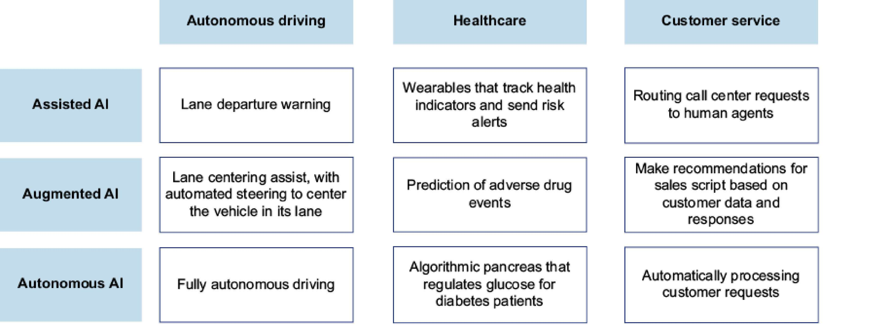
3.1.2 The driving case: Autonomous Driving (SAE Levels)
The transition from assistance to full autonomy is well exemplified by the 6 SAE levels for vehicles, ranging from no automation (Level 0) to full autonomous driving in all conditions (Level 5).
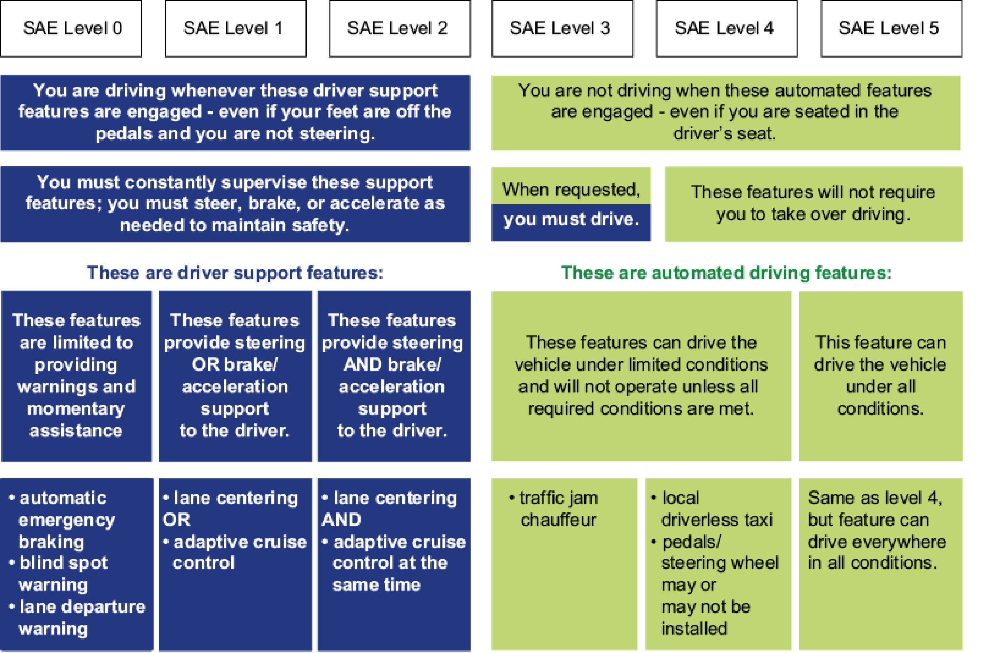
3.2 Optimal distribution of work
The success of an AI product depends on finding the distribution of work that maximizes the strengths of both actors:
- Strengths of AI: massive-scale data processing, detection of patterns invisible to humans, decision-making objectivity (absence of emotions), immediate scalability and 24-hour operation.
- Man's strengths: deep intuition, emotional intelligence and social skills, understanding of the strategic and business context, adaptability to new unstructured scenarios and ethical/moral judgement.
An excellent AI product does not aim to eliminate humans, but to integrate into their workflow to free them from repetitive tasks, allowing them to focus on activities with high added value and criticality.
3.3 Predictive AI applied to the product: complete operational picture
For many companies, the first concrete lever is not the generation of content, but the ability to transform already available data into better operational decisions. A well-designed predictive flow allows you to segment users, anticipate churn, intercept anomalies and increase conversion without relying on isolated intuitions.
Below we will use an e-commerce case as a common thread: an online store that wants to increase conversion and average order value, reducing abandonment and campaign waste. Available data includes browsing, searches, carts, purchases and response to recommendations.
3.3.1 Iterative cycle: from business problem to action
Effective work starts with precise and measurable product questions. In the e-commerce case, the question is not "do we do ML?", but:
- which users do not convert and why;
- which behaviors anticipate abandonment;
- which interventions have a real impact on loyalty and turnover.
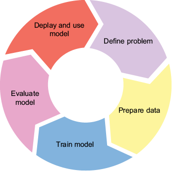
The useful operating cycle in practice:
- Problem Formulation: Translate business objectives into learning activities.
- Data preparation: collection, transformation, cleaning, quality control.
- Algorithm selection: choose approach consistent with the type of signal.
- Technical and impact evaluation: model metrics + product metrics.
- Operational grounding: campaigns, UX, decision making, monitoring.
3.3.2 Unsupervised learning: behavioral segmentation
Unsupervised segmentation is a great entry point when the dataset is rich but still poorly structured. Instead of segmenting only by demographics, it is better to build clusters on behavioral signals: frequency of visits, use of recommendations, depth of the funnel, value of purchases, profile editing.
Example of a data structure useful for clustering:
| user_id | purchased_items | purchase_value | last_active | n_visits |
|---|---|---|---|---|
| abhj3k | 2 | 908 | 2024-04-30 08:36:24 | 48 |
| shj67d | 0 | 0 | 2023-12-26 12:56:24 | 24 |
| i963gh | 12 | 673 | 2024-05-15 23:22:11 | 156 |
The quality of the clusters depends on practical choices:
- iterative engineering of characteristics, with removal of uninformative variables;
- standardization of characteristics to avoid scale distortions;
- management of missing values, duplicates, anomalies and known distortions in the data phase;
- minimization of sensitive data and verification of consent for use.
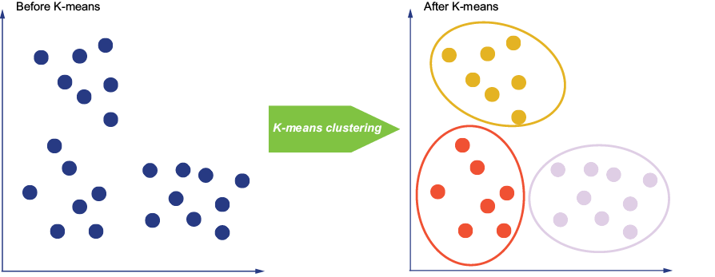
For the algorithm choice:
- K-means: very usable, fast, readable by the business team;
- hierarchical: useful if you want to explore different granularities without immediately fixing K;
- DBSCAN: effective for irregular shapes and to isolate outliers.
Minimum metrics to monitor:
- silhouette coefficient: internal cohesion and separation between clusters;
- Calinski-Harabasz index: goodness of the overall separation.
3.3.3 From clustering to supervised classification
Once useful clusters have been identified, it is best to stabilize them with supervised classification: the clusters become labels and the model automatically assigns new users to the correct segment. In this way the segmentation scales without relaunching continuous clustering.
Example of labeled dataset:
| user_id | purchased_items | purchase_value | last_active | n_visits | search_queries | segment |
|---|---|---|---|---|---|---|
| abhj3k | 2 | 908 | 2024-04-30 08:36:24 | 48 | 3 | Seekers |
| shj67d | 0 | 0 | 2023-12-26 12:56:24 | 24 | 45 | Conservatives |
| i963gh | 12 | 673 | 2024-05-15 23:22:11 | 156 | 25 | Indecisives |
| ty54df | 20 | 1250 | 2024-05-10 14:21:07 | 190 | 5 | Champions |
In a first release, an interpretable classifier (e.g. logistic regression) is often preferable to more opaque models: it facilitates adoption by marketing, sales and operations.
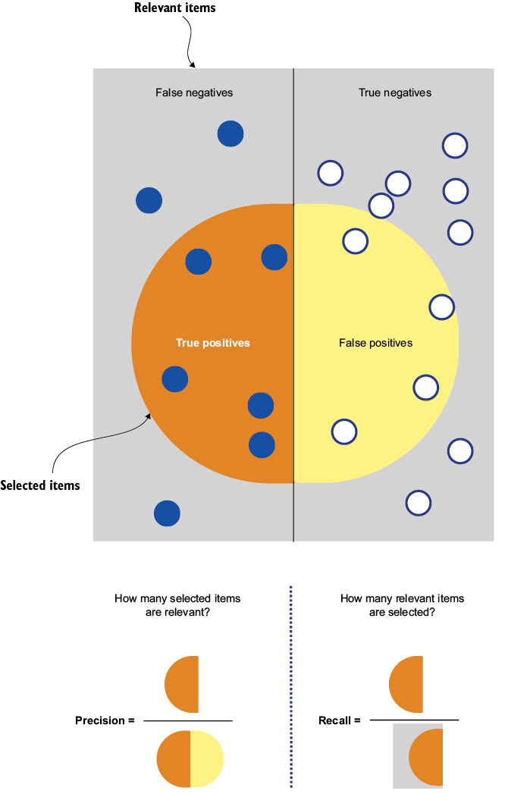
Rule of thumb:
- if the cost of a wrong campaign is high, raise precision;
- if the cost of "losing" critical users is high, raise recall.
Operational clarification:
- Precision: among the users that the model reports as targets, how many are really correct. If you want to reduce false positives (contacting the wrong people), you need to raise precision.
- Recall: among all the truly relevant users, how many are intercepted by the model. If you want to reduce false negatives (leave out critical users), you need to raise recall.
- Threshold trade-off: in general, higher threshold increases precision but reduces recall; lower threshold increases recall but reduces precision. The choice depends on the economic and operational cost of the two types of error.
Clinical example (image diagnostics, tumor detection):
- classification model with logistic regression which produces probabilities of class membership;
- for a patient it can estimate, for example: 65% tumor positive and 35% tumor negative;
- with cutoff = 65%, the case is classified as positive and sent for further investigation;
- if I used a more selective cutoff, for example 80% (more oriented towards precision), the same patient would be classified as negative because 65% < 80%;
- therefore, compared to 80%, the cutoff at 65% increases the cases reported as positive and may increase the false positives;
- the advantage is that it increases recall, reducing the clinical risk of losing really sick people (false negatives);
- the 80% cutoff does the opposite: it generally improves precision, but can reduce recall and increase false negatives.
3.3.4 Time series: trends, seasonality, anomalies
Cross-sectional analyzes explain the current state; time series explain evolution. It's the difference between describing a problem and anticipating it.
Minimal event-based time series scheme:
| Event | Date and time |
|---|---|
| Click | 2024-08-19 12:01:35.123 |
| Search | 2024-08-19 12:02:18.456 |
| Add to cart | 2024-08-19 12:03:05.789 |
Minimal metric-based time series scheme:
| Date and time | Click on recommendations |
|---|---|
| 2024-08-19 12:01:35.123 | 150 |
| 2024-08-19 12:02:18.456 | 172 |
| 2024-08-19 12:03:05.789 | 165 |
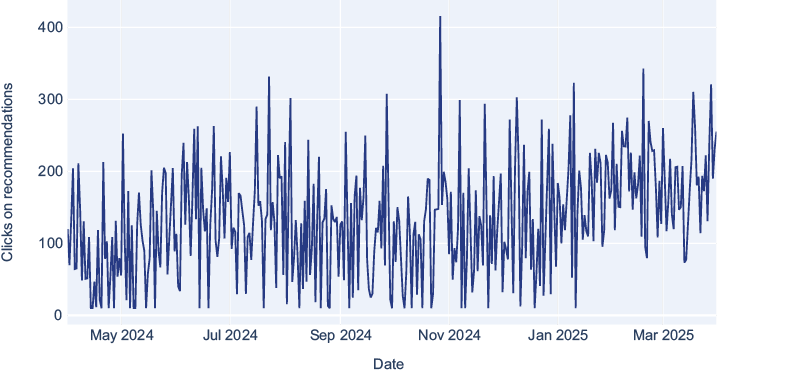
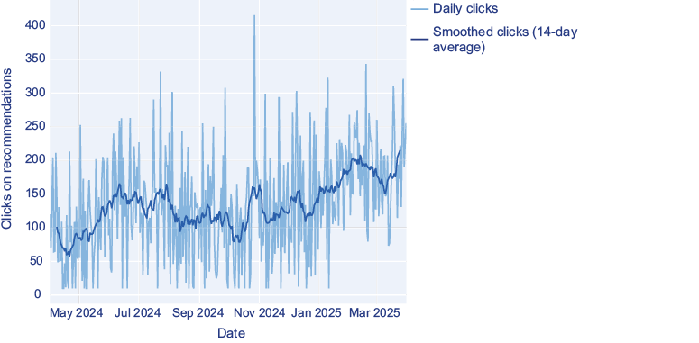
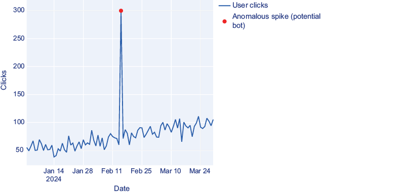
Operational use of signals in the product:
- trend: adapt ordering and visibility of the catalog to emerging demand;
- seasonality: plan campaigns and operational capacity on known windows;
- anomalies: activate anti-fraud operating procedures, performance control, incident response.
3.3.5 Recommender Systems: High-Converting Personalization
Recommendations are the meeting point between predictive AI and UX:
- collaborative filtering: exploits similarities between users or between items;
- content-based filtering: uses product attributes consistent with historical preferences;
- hybrid: combines the two approaches for accuracy and coverage.
To maintain value over time you need:
- continuous monitoring of CTR (Click-Through Rate, click rate: number of clicks / number of impressions x 100), conversion rate and interaction depth;
- A/B testing on ranking strategies and model parameters;
- explicit/implicit feedback signals to improve alignment with preferences.
3.3.6 Actionable segments and marketing/product activations
A useful segmentation is one that brings clear actions:
- Seekers: Guided content and style quizzes to clarify preferences.
- Indecisives: controlled urgency levers (time offers, promotional thresholds).
- Conservatives: UX oriented towards direct search, with gradual introduction of personalization.
- Champions: loyalty programs, early access, premium offers.
3.4 Implementation steps (predictive) to use in teams
- Define business outcome and primary metric before choosing the model.
- Prepare datasets with clear responsibility for quality, privacy and versioning.
- Initiate interpretable baseline and set minimum quality thresholds.
- Bring the model into the operational process with standard actions for each segment.
- Monitor drift, product metrics and economic impact on a regular basis.
3.5 Business case studies to watch and comment on
Below is a selection of business cases, focusing on Italian companies or those with direct operations in Italy. Each case can be discussed on four dimensions: process involved, value metrics, data prerequisites, and replicability.
3.5.1 Benetton Group (fashion retail, Italy)
- AI Process: Personalized recommendations and e-commerce conversion optimization.
- Value: users who click the recommendation panel with 6x conversion, sales +7%, time on site almost 3x.
- Link: Google Cloud - Benetton
3.5.2 E.ON Italia (utilities, Italy)
- AI Process: marketing and onboarding with BigQuery + Vertex AI and document analysis.
- Value: customer satisfaction at 87%, digital account creation +9%, conversions +184% (in the case with Cognitive Suite).
- Link: Google Cloud - E.ON Italia
3.5.3 Banca Alpi Marittime (local bank, Italy)
- AI process: automatic scoring of credit requests.
- Value: approximately 50% of requests managed without human intervention, approximately 10 FTEs freed, declared annual savings.
- Link: IBM Case Study - Banca Alpi Marittime
3.5.4 UMBRAGROUP (precision manufacturing, Italy)
- AI process: predictive modeling on production quality and waste.
- Value: over 20% reduction in non-compliant materials.
- Link: IBM Case Study - UMBRAGROUP
3.5.5 WINDTRE (telco, Italy)
- AI process: automated management of tickets and technical claims.
- Value: Over 200,000 reports handled automatically, 10x faster response time, over 10,000 reports per month.
- Link: IBM Case Study - WINDTRE
3.5.6 Unipol Assicurazioni (insurance, Italy)
- AI Process: AIOps for monitoring and managing IT incidents, with impact on operational processes.
- Value: event response from 20 minutes to 90 seconds, monitoring coverage from 26% to 100%, incident management time -90%.
- Link: IBM Case Study - Unipol
3.5.7 e-distribution (energy/electricity grid, Italy)
- AI process: ODIN project for image analysis, inspections and predictive maintenance of the network.
- Value: faster detection of critical issues and better intervention priority (qualitative case, without public numerical KPIs).
- Link: e-distribuzione - ODIN Project
3.5.8 Snam (energy/gas, Italy)
- AI Process: advanced analytics on Unaccounted-for Gas (UFG) to reduce losses and inefficiencies.
- Value: improvement of data analysis and reduction of UFG (especially qualitative results in the public case).
- Link: Engineering - Case Snam
3.6 Comment track for discussion
- What was the operational bottleneck before AI?
- Does the metric used really measure business value or just speed?
- What part of the process remained under human supervision?
- Is the result replicable in other companies or does it depend on specific conditions?
3.7 How to manage a project with AI: strategy, governance and execution
An AI project produces stable results only when strategy and governance are designed together from the beginning. Separating them almost always leads to two negative outcomes: experiments without business impact or too rigid controls that block execution.
In practice, effective management requires three continuous alignments:
- strategic alignment: each use case must solve an explicit business problem;
- operational alignment: roles, data, models and processes must be coordinated with clear responsibilities;
- risk alignment: privacy, fairness, security, compliance and explainability should be treated as project requirements, not final checks.
3.7.1 Initial setup: AI goals to backlog
Before talking about models, it is worth formalizing:
- measurable objectives (cost reduction, increase in conversion, reduction in decision-making times, quality of service);
- perimeter of the problem (processes involved, users impacted, systems affected);
- constraints (regulatory, technological, organisational);
- success and stopping criteria.
A useful operational criterion is to start with cases with high feasibility and rapid impact, in order to build internal credibility and execution capacity before scaling to more complex initiatives.
3.7.2 Phase 1: Ideation and definition
The ideation phase must produce concrete outputs, not just ideas:
- map of candidate use cases;
- value hypotheses for each case;
- pre-mortem analysis (because it could fail);
- first estimate of risks, costs and times.
Cross-functional sessions between business, technology, legal/compliance, security and operations are crucial in this phase. Value does not arise from generic brainstorming, but from shared priorities and explicit compromises.
3.7.3 Phase 2: Data and preparation
The quality of the project depends on the quality of the data rather than on the sophistication of the model.
Minimum checklist:
- availability, coverage and updating of data;
- quality (completeness, accuracy, temporal coherence);
- traceability of transformations;
- management of sensitive data and consent;
- checks on bias and representativeness.
Data governance must be set up as an ongoing discipline: dataset responsibility, access rules, quality standards, auditability and retention policies.
3.7.4 Phase 3: Development and testing
This phase combines two needs: learning speed and risk control.
Recommended approach:
- start with interpretable baselines;
- compare alternatives with comparable metrics;
- document hypotheses, characteristics, parameters and results;
- evaluate not only model performance, but also real operational impact.
Experimentation works when it takes place in a protected context with ethical and safety rules already in place.
3.7.5 Phase 4: Operationalization and monitoring
The release is not the end of the project; it is the beginning of ongoing management.
Mandatory elements:
- gradual release plan (pilot, controlled extension, scale);
- technical monitoring (data/model drift, latency, stability);
- business monitoring (result KPIs, adoption, ROI);
- risk monitoring (fairness, explainability, incidents, compliance);
- escalation and recovery operational procedures.
3.7.6 Execution mode: iterative, hybrid, progressive release
Hybrid management works well in AI projects:
- infrastructural and control parts with greater structure;
- model experimentation with rapid iterative cycles;
- phased release to reduce systemic risk.
This combination maintains governability without losing learning speed.
3.7.7 Key roles in the project
| Role | Primary responsibility | Main expected results |
|---|---|---|
| AI Project Manager | Complete coordination, priorities, dependencies, risk | Project plan, evolutionary plan, governance meetings, progress status |
| Data Scientist | Modeling, evaluation, tuning, interpretation | Experiments, metrics, validation reports, acceptance criteria |
| Data Engineer | Data pipeline, quality, reliability, integration | data pipelines, quality controls, data versioning, production feeding |
| Product/Business Owner | Alignment with business objectives | Impact KPIs, prioritized backlog, scoping decisions |
| Risk/Compliance/Security | Regulatory oversight and controls | Risk assessments, control evidence, audit traceability |
3.7.8 KPIs to monitor throughout the life cycle
| Size | KPI examples |
|---|---|
| Business Value | ROI, conversion rate, operational cost reduction, cycle time |
| Model Quality | precision, recall, error rate, stability over time |
| Operation | service availability, latency, processing capacity, average incident resolution time |
| Risk and trust | distortion indicators, number of compliance incidents, quality of explanations, user complaints |
3.7.9 Recurring errors and countermeasures
| Frequent error | Operational countermeasure |
|---|---|
| Objectives not aligned with the business | Define measurable goals and success criteria before development |
| Incomplete or distorted data | Strengthen data governance, quality controls and bias controls |
| Insufficient skills | Training plan and development/purchase/partnership mix |
| Underestimated complexity | Realistic planning of times, costs and dependencies |
| Ethics and compliance covered late | Integration of controls from the concept phase |
| Silo between functions | Cross-functional teams and shared decisions |
| Lack of ability to pivot | Periodic reviews and adaptive backlog |
| Poor executive support | Explicit sponsorship with timed governance |
3.7.10 Accountability and decision-making responsibility
To avoid gray areas, responsibility must be distributed across clear levels:
- whoever designs the model is responsible for the technical robustness;
- whoever puts it into operation is responsible for its compliant use and monitoring;
- the organization is responsible for risk choices and consequences;
- control and audit functions verify quality, legality and traceability over time.
Without an explicit accountability model, incidents turn into organizational conflicts and slow down every iteration.
3.7.11 Inclusion, social impact and communication
Project management cannot stop at technical performance. You also need to check:
- accessibility of interfaces and processes;
- impacts on different groups of users;
- transparency towards internal and external stakeholders;
- communication plan that explains what the system does, how it is controlled and with what limits.
This protection increases trust, adoption and sustainability over time.
3.7.12 Cost factors to plan in advance
The real costs aren't just "model and cloud." The main items are:
- people (specialist skills and continuous training);
- infrastructure (storage, compute, environments, observability);
- development and integration (pipeline, API, existing systems);
- governance and compliance (audits, controls, documentation);
- accident and legal risk management;
- evolutionary maintenance (retraining, monitoring, policy review).
Mature management uses comprehensive cost categories to avoid structural underestimations.
3.8 Checklist of main concepts
- Validate the AI opportunity with user impact, business value, and technical feasibility.
- Define the role of AI in the process (automation, decision support, personalization).
- Align data, model and UX with a clear design of the solution and risks.
- Set governance and accountability early in the design phase.
- Plan experimentation, phased release, and ongoing monitoring metrics.
- Maintain an improvement cycle with operational feedback and periodic reviews.
3.9 Useful module links
| Title | Description | Links |
|---|---|---|
| NIST AI Risk Management Framework (AI RMF 1.0) | Operational framework to identify, assess and manage AI risks across the lifecycle, with practical governance, mapping, measurement and management functions. | NIST AI Risk Management Framework |
| CMMI Institute - AI Working Group (AIWG) | Initiative focused on AI governance and operational maturity, with guidance and practical contributions for organizations adopting AI at scale. | CMMI Institute - AIWG |
| Layermark - CMMI AI Maturity | Overview of the CMMI-based AI maturity framework, useful for evaluating the level of adoption and structuring the transition towards repeatable operational practices. | Layermark - CMMI AI Maturity |
| IBM watsonx.governance | Platform to govern AI models and applications with controls on risk, regulatory compliance, monitoring and traceability throughout the life cycle. | IBM watsonx.governance |
| Fanpage - AI in the direction of Sanremo | Informative case on AI adoption in a complex live context, useful for discussing operational limits, implementation errors and reputational risk. | Fanpage - AI and direction of Sanremo |
3.10 Recommended labs for Module 01
| Recommended Lab | Objectives | Category |
|---|---|---|
| Generative AI Explorer - Vertex AI | Complete introduction to GenAI capabilities and main use scenarios, useful for understanding value levers and initial limitations. | Course |
| Introduction to Gemini 3 | Quick operational basis to understand model behavior and set realistic expectations on output quality. | Lab |
| Generative AI with Vertex AI: Prompt Design | It directly links prompt quality, risk of error and reliability, central themes of Module 01. | Lab |
| Get Started with Vertex AI Studio | Helps move from theory to controlled prototyping, useful for prioritization and cautious vs rapid approach. | Lab |
| Intro to Grounding with Gemini in Vertex AI | Useful for mitigating hallucinations and improving reliability, in line with the module's risk and governance block. | Focus |